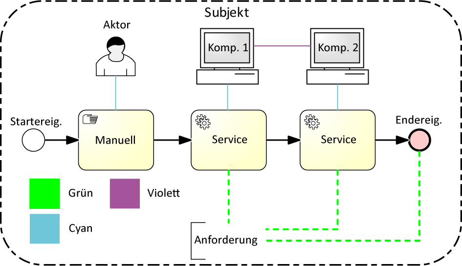
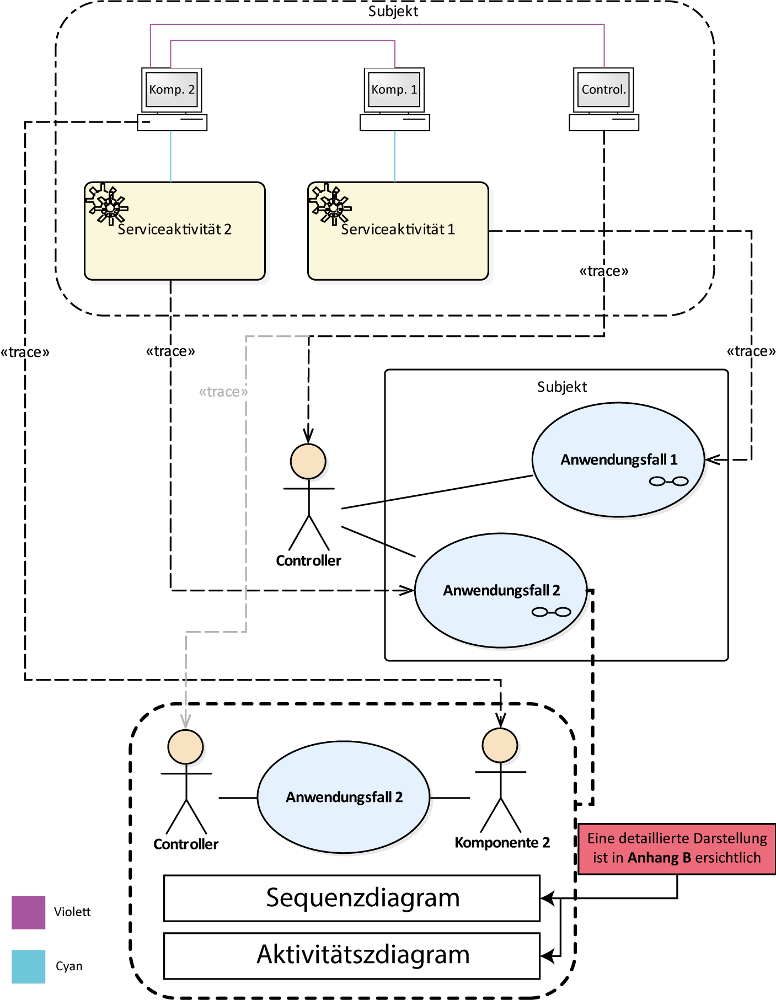
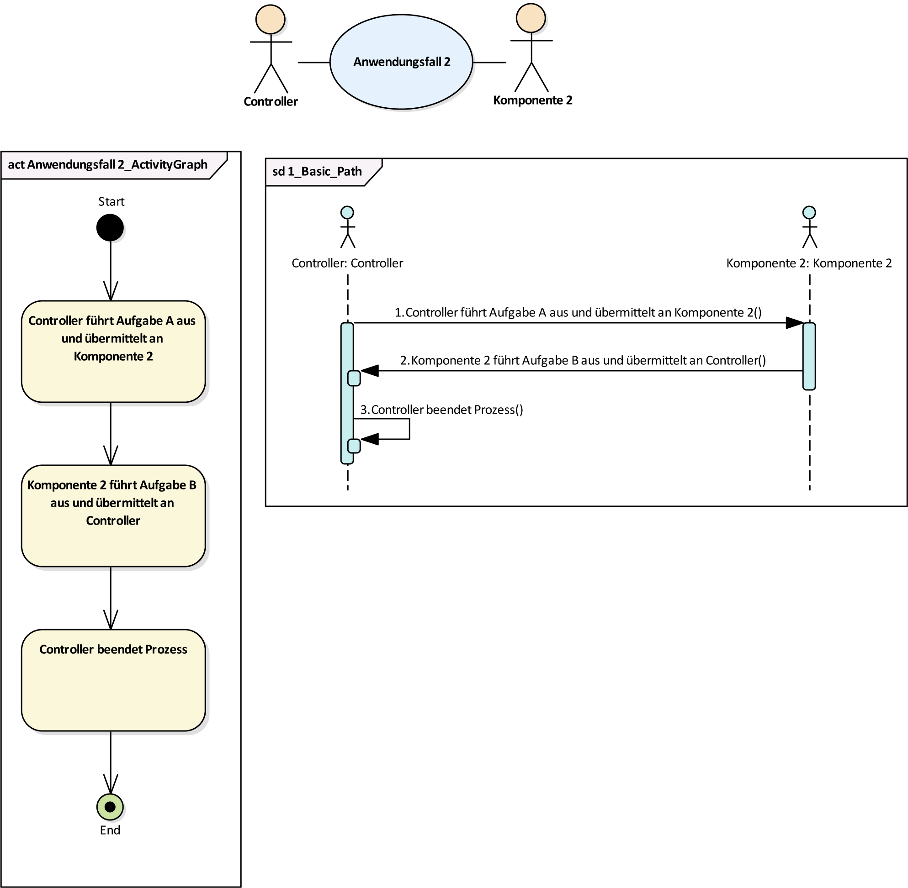
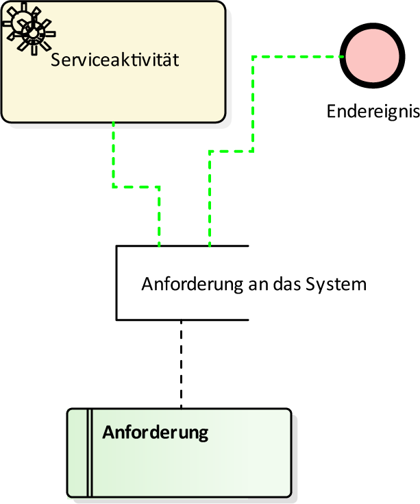

CIM-Layer
1. Erstellung des Prozessmodellierung
Die SIDP-Toolbox baut ein für den Anwendungsfall spezifiziertes Prozessmodell auf. Die erste Aufgabe in diesem Schritt ist die Modellierung eine Prozesses mit BPMN 2.0. Abbildung 1 zeigt ein schmatische Darstellung die als Vorbild dient. Die SIDP-TOolbox gibt verfügt zu diesem Schritt keine Automatismen. Das Prozessmodell muss daher vollständig manuell implementiert werden.

Abbildung 1: Grundlegender Aufbau von Prozessen mit BPMN 2.0.
Prozessmodelle in Zusammenhang mit SIDP-Systemen berücksichtigen nur die Anwendung von Standard Start- und Endereignissen. Alle anderen Ereignisarten sind bei der Modellierung eines BPMN 2.0 für die Gestalltung des Prozesses des Anwendungsfalles zu vernachlässigen.
Artefakte sind bei der Modellierung von SIDP-Systemen zu verwenden um Aktoren und Systemkomponenten darstellen zu können.
Manuelle Aktivitäten stehen im Zusammenhang mit Aktoren und Service-Aktivitätenmit Systemkomponenten. Artefakte sind mit Cyan-färbigen Assoziationslinien zuAktivtäten zu verbinden. Die Verbindung zwischen Systemkomponenten sind mitvioletten Assoziationslinien darzustellen.
Anforderungen sind in BPMN-Textannotationen anzugeben und mit Service-Aktivitäten oder Standard-Endereignissen mittels grüner Assoziationslinien zu verbinden.
2. Erstellung des Use-Case-Diagramms
Der zweite Schritt beinhaltet die Erstellung des Use-Case-Diagramms. In diesem Schritt der Modellierung der CIM-Ebene ist sowohl mit manuellen Tätigkeiten, als auch mit automatismen umzusetzten. Abbildung 2 zeigt eine Vorlage wie Modllierung umzusetzen ist.

Abbildung 2: Vorlage zur Erstellung des Use-Case-Diagramms.
Jede Serviceaktivität aus einem BPMN 2.0 Prozessmodell entspricht einem Anwendungsfall. Die überführung erfolgt automatisch durch die Funktion "Use-Cases Generieren". Die Verbindungen zwischen einer Serviceaktivität und einem Anwendungsfall ist durch eine Trace-Assoziation zu gewährleisten und muss manuell erfolgen.
Systembestandteile werden wie in Abbildung 2 oben als Artefakte dargestellt. Artefakte werden in Controller und Systemkomponenten unterteilt. Controller stellen zentrale Artefakte dar und weisen mulitple eingehende Verbindungen vo Systemkomponenten auf. Zentrale Artefakte sind Use-Case-Diagramm als Akteure zu übeführen. Die überführung erfolgt automatisch durch die Funktion "Akteure Generieren". Die Verbindung zwischen einer Serviceaktivität und einem Anwendungsfall ist durch eine Trace-Assoziation zu gewährleisten und muss manuell erfolgen.
Weitere Systembestandteile sind innerhalb einer Composite-Structure eines Anwendungsfalles als Aktoren zu veranschaulichen. Eine Composite-Structure, wird durch ein Brillensymbol rechts unterhalb der Anwendungsfallbezeichnung, signalisiert. Innerhalb der Composite-Structure sind "Sequenzdiagramme" sowie "Aktivitätsdiagramme" für die detailliertere Beschreibung von einzelnen Anwendungsfällen anzufertigen. Die folgende Abbildung dient als Vorlage für die Realisierung der Composite-Structure

Abbildung 3: Vorlage zur Erstellung des Use-Case-Diagramms.
Inmitten einer Composite-Structure ist die überführung von Systemkomponenten zu Akteuren zu gewährleisten. Die Composite-Structure soll die Verbindungen zwischen Controller, Anwendungsfall und Systemkomponente aufweisen. Eine Verbindung zwischen den Systemkomponenten im Prozessmodell und den dazu überführten Akteuren in der Composite-Structure ist durch eine Trace-Assoziation zu gewährleisten.
Eine "Gruppierung", wie sie in Abbildung 2 durch den Rahmen des Prozessablaufs mit der Benennung "Subjekt" dargestellt wird und ist in UC-Diagrammen als System-Boundary abzubilden. Die übeführung erfolgt automatisch durch das EA-Addin. Die Bezeichnung der System-Baundary wird für die der Gruppierung übernommen.
3. Erstellung des Requirement-Diagramms
Ein essentieller Bestandteil für die Darstellung des CIM ist die Repräsentation der Anforderungen an das System. Anforderungen werden in BPMN 2.0 als Artefakte in Form von Textannotationen angeführt. Die überführung dieser erfolgt auf einem SysML-Anforderungsdiagramm in Form von funktionalen oder nicht-funktionalen Anforderungsblöcken. Die überführung wird efolgt Automatisch durch die Funktion "Anforderungen Generieren" im EA-Addin. Die Spezifizierung der Anforderungsart (funktional oder nicht-funktional)ist manuell einzutragen. Abbildung 3 zeigt den Zusammenhang mit dem in BPMN 2.0 modellierten Prozess und dem SysML-Anforderungsdiagramm.

Abbildung 4: Zusammenhang zwischen Anfoderungen in BPMN 2.0 und dem SysML-Anfoderungsdiagramm.